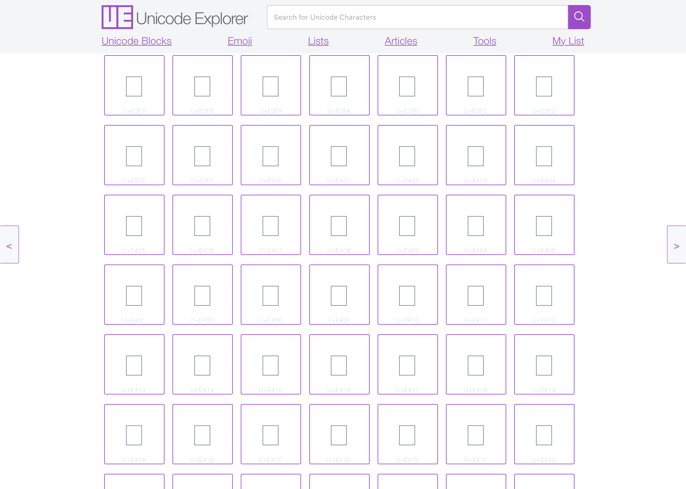
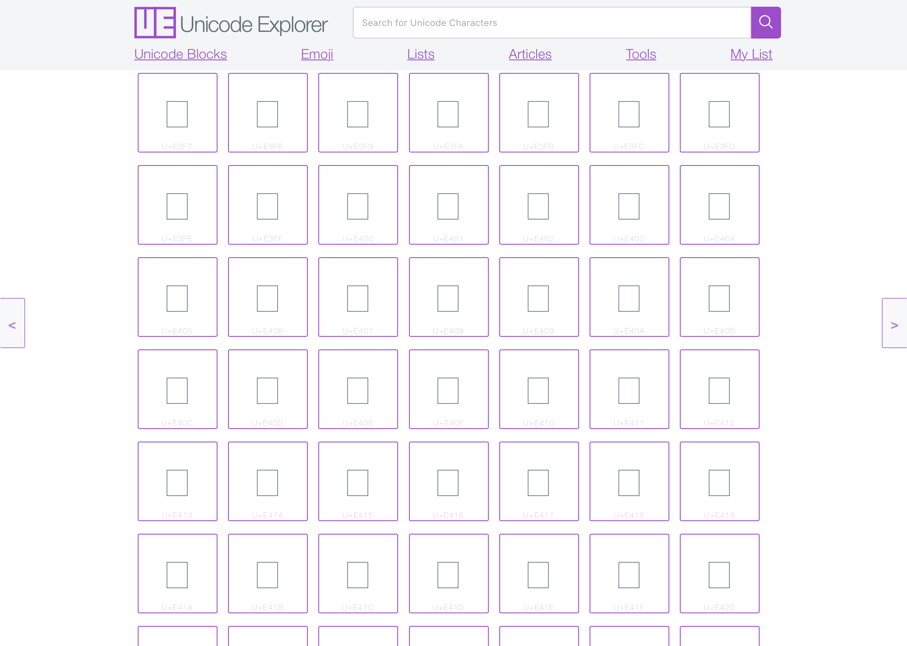

Many players have been asking how to get some of the custom emojis also known as Unicode or glyphs. Here is an in-depth guide on how to obtain and use these awesome characters. Use this website as your atlas to find the Unicode.
Below is a chart of the current locations of the in-game Unicode. Once you have found the Unicode you would like to use, copy and paste it into your Book and Quill.
 
